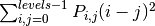

Module: feature¶
| skimage.feature.greycomatrix(image, ...[, ...]) | Calculate the grey-level co-occurrence matrix. |
| skimage.feature.greycoprops(P[, prop]) | Calculate texture properties of a GLCM. |
| skimage.feature.harris(image[, ...]) | Return corners from a Harris response image |
| skimage.feature.hog(image[, orientations, ...]) | Extract Histogram of Oriented Gradients (HOG) for a given image. |
| skimage.feature.local_binary_pattern(image, P, R) | Gray scale and rotation invariant LBP (Local Binary Patterns). |
| skimage.feature.match_template(image, template) | Match a template to an image using normalized correlation. |
| skimage.feature.peak_local_max(image[, ...]) | Return coordinates of peaks in an image. |
greycomatrix¶
- skimage.feature.greycomatrix(image, distances, angles, levels=256, symmetric=False, normed=False)¶
Calculate the grey-level co-occurrence matrix.
A grey level co-occurence matrix is a histogram of co-occuring greyscale values at a given offset over an image.
Parameters : image : array_like of uint8
Integer typed input image. The image will be cast to uint8, so the maximum value must be less than 256.
distances : array_like
List of pixel pair distance offsets.
angles : array_like
List of pixel pair angles in radians.
levels : int, optional
The input image should contain integers in [0, levels-1], where levels indicate the number of grey-levels counted (typically 256 for an 8-bit image). The maximum value is 256.
symmetric : bool, optional
If True, the output matrix P[:, :, d, theta] is symmetric. This is accomplished by ignoring the order of value pairs, so both (i, j) and (j, i) are accumulated when (i, j) is encountered for a given offset. The default is False.
normed : bool, optional
If True, normalize each matrix P[:, :, d, theta] by dividing by the total number of accumulated co-occurrences for the given offset. The elements of the resulting matrix sum to 1. The default is False.
Returns : P : 4-D ndarray
The grey-level co-occurrence histogram. The value P[i,j,d,theta] is the number of times that grey-level j occurs at a distance d and at an angle theta from grey-level i. If normed is False, the output is of type uint32, otherwise it is float64.
References
[R72] The GLCM Tutorial Home Page, http://www.fp.ucalgary.ca/mhallbey/tutorial.htm [R73] Pattern Recognition Engineering, Morton Nadler & Eric P. Smith [R74] Wikipedia, http://en.wikipedia.org/wiki/Co-occurrence_matrix Examples
Compute 2 GLCMs: One for a 1-pixel offset to the right, and one for a 1-pixel offset upwards.
>>> image = np.array([[0, 0, 1, 1], ... [0, 0, 1, 1], ... [0, 2, 2, 2], ... [2, 2, 3, 3]], dtype=np.uint8) >>> result = greycomatrix(image, [1], [0, np.pi/2], levels=4) >>> result[:, :, 0, 0] array([[2, 2, 1, 0], [0, 2, 0, 0], [0, 0, 3, 1], [0, 0, 0, 1]], dtype=uint32) >>> result[:, :, 0, 1] array([[3, 0, 2, 0], [0, 2, 2, 0], [0, 0, 1, 2], [0, 0, 0, 0]], dtype=uint32)
greycoprops¶
- skimage.feature.greycoprops(P, prop='contrast')¶
Calculate texture properties of a GLCM.
Compute a feature of a grey level co-occurrence matrix to serve as a compact summary of the matrix. The properties are computed as follows:
‘contrast’: 
‘dissimilarity’:

‘homogeneity’:

‘ASM’:

‘energy’:

- ‘correlation’:
![\sum_{i,j=0}^{levels-1} P_{i,j}\left[\frac{(i-\mu_i) \
(j-\mu_j)}{\sqrt{(\sigma_i^2)(\sigma_j^2)}}\right]](../_images/math/c649a0ee8056e19b6bb96959c6590078b369a2e5.png)
Parameters : P : ndarray
Input array. P is the grey-level co-occurrence histogram for which to compute the specified property. The value P[i,j,d,theta] is the number of times that grey-level j occurs at a distance d and at an angle theta from grey-level i.
prop : {‘contrast’, ‘dissimilarity’, ‘homogeneity’, ‘energy’, ‘correlation’, ‘ASM’}, optional
The property of the GLCM to compute. The default is ‘contrast’.
Returns : results : 2-D ndarray
2-dimensional array. results[d, a] is the property ‘prop’ for the d’th distance and the a’th angle.
References
[R75] The GLCM Tutorial Home Page, http://www.fp.ucalgary.ca/mhallbey/tutorial.htm Examples
Compute the contrast for GLCMs with distances [1, 2] and angles [0 degrees, 90 degrees]
>>> image = np.array([[0, 0, 1, 1], ... [0, 0, 1, 1], ... [0, 2, 2, 2], ... [2, 2, 3, 3]], dtype=np.uint8) >>> g = greycomatrix(image, [1, 2], [0, np.pi/2], levels=4, ... normed=True, symmetric=True) >>> contrast = greycoprops(g, 'contrast') >>> contrast array([[ 0.58333333, 1. ], [ 1.25 , 2.75 ]])
harris¶
- skimage.feature.harris(image, min_distance=10, threshold=0.10000000000000001, eps=9.9999999999999995e-07, gaussian_deviation=1)¶
Return corners from a Harris response image
Parameters : image : ndarray of floats
Input image.
min_distance : int, optional
Minimum number of pixels separating interest points and image boundary.
threshold : float, optional
Relative threshold impacting the number of interest points.
eps : float, optional
Normalisation factor.
gaussian_deviation : integer, optional
Standard deviation used for the Gaussian kernel.
Returns : coordinates : (N, 2) array
(row, column) coordinates of interest points.
Examples :
——- :
>>> square = np.zeros([10,10]) :
>>> square[2:8,2:8] = 1 :
>>> square :
array([[ 0., 0., 0., 0., 0., 0., 0., 0., 0., 0.], :
[ 0., 0., 0., 0., 0., 0., 0., 0., 0., 0.], [ 0., 0., 1., 1., 1., 1., 1., 1., 0., 0.], [ 0., 0., 1., 1., 1., 1., 1., 1., 0., 0.], [ 0., 0., 1., 1., 1., 1., 1., 1., 0., 0.], [ 0., 0., 1., 1., 1., 1., 1., 1., 0., 0.], [ 0., 0., 1., 1., 1., 1., 1., 1., 0., 0.], [ 0., 0., 1., 1., 1., 1., 1., 1., 0., 0.], [ 0., 0., 0., 0., 0., 0., 0., 0., 0., 0.], [ 0., 0., 0., 0., 0., 0., 0., 0., 0., 0.]])
>>> harris(square, min_distance=1) :
Corners of the square :
array([[3, 3], :
[3, 6], [6, 3], [6, 6]])
hog¶
- skimage.feature.hog(image, orientations=9, pixels_per_cell=(8, 8), cells_per_block=(3, 3), visualise=False, normalise=False)¶
Extract Histogram of Oriented Gradients (HOG) for a given image.
Compute a Histogram of Oriented Gradients (HOG) by
- (optional) global image normalisation
- computing the gradient image in x and y
- computing gradient histograms
- normalising across blocks
- flattening into a feature vector
Parameters : image : (M, N) ndarray
Input image (greyscale).
orientations : int
Number of orientation bins.
pixels_per_cell : 2 tuple (int, int)
Size (in pixels) of a cell.
cells_per_block : 2 tuple (int,int)
Number of cells in each block.
visualise : bool, optional
Also return an image of the HOG.
normalise : bool, optional
Apply power law compression to normalise the image before processing.
Returns : newarr : ndarray
HOG for the image as a 1D (flattened) array.
hog_image : ndarray (if visualise=True)
A visualisation of the HOG image.
References
- http://en.wikipedia.org/wiki/Histogram_of_oriented_gradients
- Dalal, N and Triggs, B, Histograms of Oriented Gradients for Human Detection, IEEE Computer Society Conference on Computer Vision and Pattern Recognition 2005 San Diego, CA, USA
local_binary_pattern¶
- skimage.feature.local_binary_pattern(image, P, R, method='default')¶
Gray scale and rotation invariant LBP (Local Binary Patterns).
LBP is an invariant descriptor that can be used for texture classification.
Parameters : image : (N, M) array
Graylevel image.
P : int
Number of circularly symmetric neighbour set points (quantization of the angular space).
R : float
Radius of circle (spatial resolution of the operator).
method : {‘default’, ‘ror’, ‘uniform’, ‘var’}
Method to determine the pattern.
- ‘default’: original local binary pattern which is gray scale but not
rotation invariant.
- ‘ror’: extension of default implementation which is gray scale and
rotation invariant.
- ‘uniform’: improved rotation invariance with uniform patterns and
finer quantization of the angular space which is gray scale and rotation invariant.
- ‘var’: rotation invariant variance measures of the contrast of local
image texture which is rotation but not gray scale invariant.
Returns : output : (N, M) array
LBP image.
References
[R76] Multiresolution Gray-Scale and Rotation Invariant Texture Classification with Local Binary Patterns. Timo Ojala, Matti Pietikainen, Topi Maenpaa. http://www.rafbis.it/biplab15/images/stories/docenti/Danielriccio/ Articoliriferimento/LBP.pdf, 2002.
match_template¶
- skimage.feature.match_template(image, template, pad_input=False)¶
Match a template to an image using normalized correlation.
The output is an array with values between -1.0 and 1.0, which correspond to the probability that the template is found at that position.
Parameters : image : array_like
Image to process.
template : array_like
Template to locate.
pad_input : bool
If True, pad image with image mean so that output is the same size as the image, and output values correspond to the template center. Otherwise, the output is an array with shape (M - m + 1, N - n + 1) for an (M, N) image and an (m, n) template, and matches correspond to origin (top-left corner) of the template.
Returns : output : ndarray
Correlation results between -1.0 and 1.0. For an (M, N) image and an (m, n) template, the output is (M - m + 1, N - n + 1) when pad_input = False and (M, N) when pad_input = True.
Examples
>>> template = np.zeros((3, 3)) >>> template[1, 1] = 1 >>> print template [[ 0. 0. 0.] [ 0. 1. 0.] [ 0. 0. 0.]] >>> image = np.zeros((6, 6)) >>> image[1, 1] = 1 >>> image[4, 4] = -1 >>> print image [[ 0. 0. 0. 0. 0. 0.] [ 0. 1. 0. 0. 0. 0.] [ 0. 0. 0. 0. 0. 0.] [ 0. 0. 0. 0. 0. 0.] [ 0. 0. 0. 0. -1. 0.] [ 0. 0. 0. 0. 0. 0.]] >>> result = match_template(image, template) >>> print np.round(result, 3) [[ 1. -0.125 0. 0. ] [-0.125 -0.125 0. 0. ] [ 0. 0. 0.125 0.125] [ 0. 0. 0.125 -1. ]] >>> result = match_template(image, template, pad_input=True) >>> print np.round(result, 3) [[-0.125 -0.125 -0.125 0. 0. 0. ] [-0.125 1. -0.125 0. 0. 0. ] [-0.125 -0.125 -0.125 0. 0. 0. ] [ 0. 0. 0. 0.125 0.125 0.125] [ 0. 0. 0. 0.125 -1. 0.125] [ 0. 0. 0. 0.125 0.125 0.125]]
peak_local_max¶
- skimage.feature.peak_local_max(image, min_distance=10, threshold='deprecated', threshold_abs=0, threshold_rel=0.10000000000000001, num_peaks=inf)¶
Return coordinates of peaks in an image.
Peaks are the local maxima in a region of 2 * min_distance + 1 (i.e. peaks are separated by at least min_distance).
NOTE: If peaks are flat (i.e. multiple pixels have exact same intensity), the coordinates of all pixels are returned.
Parameters : image : ndarray of floats
Input image.
min_distance : int
Minimum number of pixels separating peaks and image boundary.
threshold : float
Deprecated. See threshold_rel.
threshold_abs : float
Minimum intensity of peaks.
threshold_rel : float
Minimum intensity of peaks calculated as max(image) * threshold_rel.
num_peaks : int
Maximum number of peaks. When the number of peaks exceeds num_peaks, return num_peaks coordinates based on peak intensity.
Returns : coordinates : (N, 2) array
(row, column) coordinates of peaks.
Notes
The peak local maximum function returns the coordinates of local peaks (maxima) in a image. A maximum filter is used for finding local maxima. This operation dilates the original image. After comparison between dilated and original image, peak_local_max function returns the coordinates of peaks where dilated image = original.
Examples
>>> im = np.zeros((7, 7)) >>> im[3, 4] = 1 >>> im[3, 2] = 1.5 >>> im array([[ 0. , 0. , 0. , 0. , 0. , 0. , 0. ], [ 0. , 0. , 0. , 0. , 0. , 0. , 0. ], [ 0. , 0. , 0. , 0. , 0. , 0. , 0. ], [ 0. , 0. , 1.5, 0. , 1. , 0. , 0. ], [ 0. , 0. , 0. , 0. , 0. , 0. , 0. ], [ 0. , 0. , 0. , 0. , 0. , 0. , 0. ], [ 0. , 0. , 0. , 0. , 0. , 0. , 0. ]])
>>> peak_local_max(im, min_distance=1) array([[3, 2], [3, 4]])
>>> peak_local_max(im, min_distance=2) array([[3, 2]])